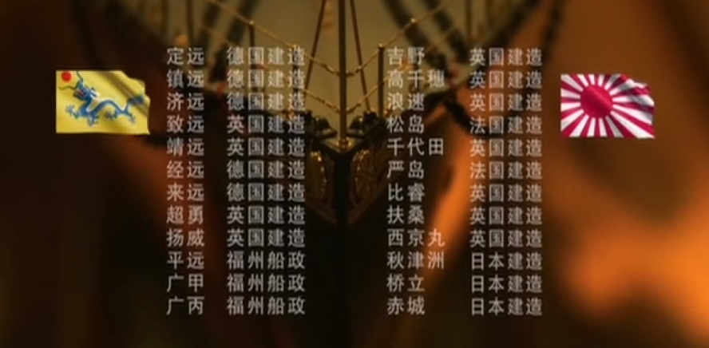

甲午
Table of Contents
1 时间表
| 中国 | 日本 | |
|---|---|---|
| 1633 | 德川幕府颁布《锁国令》 | |
| 1641 | 长崎成为唯一国际贸易港，允许中国、荷兰商船进行贸易 | |
| 1656 | 颁布《禁海令》 | |
| 1757 | 乾隆谕令西洋商人只可以在广东通商 | |
| 1793 | 英使马戛尔尼（George Macartney）出使中国 | |
| 1834 | 与英舰第一次交火 | |
| 1840 | 第一次鸦片战争爆发 | |
| 1853 | 「黑船来航」，美国四艘舰船驶入江户湾，要求日本开国 | |
| 1854 | 与美签订《神奈川条约》，开放港口通商 | |
| 1858 | 与俄、美、英、法签订《天津条约》 | 与美、荷、俄、英、法签订《安政五国条约》 |
| 1860 | 与英、法、俄签订《北京条约》 | 第一个外交使团 77 人出访美国 |
| 1861 | 设立「总理各国事务衙门」，「洋务运动」开始 | |
| 1862 | 代表团到达上海，目睹清朝被欧美宰割的情形 | |
| 使团考察英国纽卡斯尔 | ||
| 1865 | 建立「横须贺制铁所」 | |
| 1866 | 第一批中国官员（斌椿等 5 人）出访欧洲 | |
| 设立「福州船政局」 | ||
| 1868 | 第一个外交使团「蒲安臣（Anson Burlingame）使团」出使欧美 | 天皇宣布废除幕府，迁都东京，改年号为「明治」，建立维新政府 |
| 1869 | 第一艘炮舰「万年清」建成 | 使团赴欧考察军事制度，开始军事近代化 |
| 1870 | 设立「天津机器制造局」 | |
| 1871 | 「岩仓使团」出访欧美，商谈修约，考察政治、经济、教育制度 | |
| 与中签订《中日修好条规》，联合中国对抗西方 | ||
| 建立「横须贺造船所」 | ||
| 1872 | 「留美幼童计划」开始 | 成立「海军省」 |
| 第一艘巡洋舰「扬武」建成 | ||
| 1874 | 向日本赔款，引发「海防大筹议」 | 「牡丹社事件」，入侵台湾 |
| 1875 | 向英国订购三艘大型军舰 | |
| 1876 | 向英国订购的第一批炮舰（gunboat）运抵大沽口 | 与朝签订《江华条约》，互认独立自主，「大陆政策」开始实践 |
| 第一位驻外公使郭嵩焘因撰写《使西纪程》被撤职查办 | 建成第一艘军舰「清辉」 | |
| 1877 | 第一批海军留学生留学英国 | |
| 1878 | 第一个机械开采煤矿「开平矿务局」投产 | |
| 1879 | 第一条军用电报线（大沽炮台至天津电报线）架设 | 吞并琉球，改为「冲绳县」 |
| 1881 | 「留美幼童计划」中止 | |
| 丁汝昌率团抵达英国接收撞击巡洋舰「超勇」、「扬威」 | ||
| 第一条自主修建铁路「唐胥铁路」竣工 | ||
| 「旅顺大坞」动工 | ||
| 1882 | 出兵平定朝鲜「壬午兵变」，与日本交恶 | |
| 琅威理（William Lang）受聘训练北洋水师 | ||
| 1884 | 中法「马江海战」，「福建船政水师」遭重创 | |
| 出兵干预朝鲜「甲申政变」 | ||
| 海军经费被挪用重修颐和园 | ||
| 1885 | 设立「总理海军事务衙门」，总管向西方学习事务 | 福泽谕吉发表《脱亚论》 |
| 李鸿章和伊藤博文签订《天津条约》，约定对朝鲜出兵权力 | 获得与清朝同等的处置朝鲜问题的权力 | |
| 向德国订购的一等铁甲舰「定远」、「镇远」归国就役 | 针对「定远」、「镇远」设计建造三艘巡洋舰「三景舰」 | |
| 1887 | 琅威理率团抵达英国接收防护巡洋舰「致远」、「靖远」 | |
| 向德国订购装甲巡洋舰「经远」、「来远」归国就役 | ||
| 1888 | 「北洋水师」正式成军，海军 4000 人，军舰 25 艘 | 间谍调查威海卫兵备情况 |
| 第一艘铁甲舰「平远」建成 | ||
| 1889 | 光绪亲政 | 第一部《宪法》颁布，确立天皇统率军队的权力 |
| 1890 | 琅威理愤然辞职，中英海军合作出现危机，水师训练开始松懈 | 在上海设立「日清贸易研究所」，派出间谍考察中国 |
| 1891 | 丁汝昌受邀率领六艘主力舰访问日本 | 清朝海军实力引起日本高度警觉 |
| 水师购买船只机器经费被暂停两年 | ||
| 1893 | 天皇谕示为建造军舰拨款 6 年 | |
| 向英国订购的穹甲巡洋舰「吉野」归国就役，领先「定远」、「镇远」十年 | ||
| 1894/01 | 叶志超出兵平定朝鲜「东学党之乱」 | |
| 1894/05 | 叛乱平定，袁世凯要求同时撤军 | 要求中日共同留兵朝鲜 |
| 1894/07 | 「丰岛海战」，「浪速」击沉英国商轮「高升」（运兵船） | |
| 1894/08 | 正式对日宣战 | |
| 1894/09 | 「黄海海战」，第一场近代化海战 | 夺取黄海、渤海制海权 |
| 「致远」、「经远」、「超勇」、「扬威」沉没 | 四艘舰船受重创，无船沉没 | |
| 「定远」、「镇远」、「靖远」、「来远」受重创 | ||
| 1894/11 | 攻占旅顺、大连湾 | |
| 1894/12 | 「镇远」触礁，无法出海作战 | |
| 1895/01 | 登陆荣成，进攻威海卫 | |
| 1895/02 | 「定远」、「靖远」自沉，「来远」中鱼雷沉没 | 攻陷威海卫、刘公岛 |
| 「镇远」、「济远」等 10 舰被俘，北洋水师全军覆没 | ||
| 1895/04 | 李鸿章和伊藤博文签订《马关条约》，割让台湾 | 近代第一场大规模对外战争胜利，军国主义开始盛行 |
| 2014 | 黄海海域发现「致远」残骸 |

Figure 1: 黄海海战